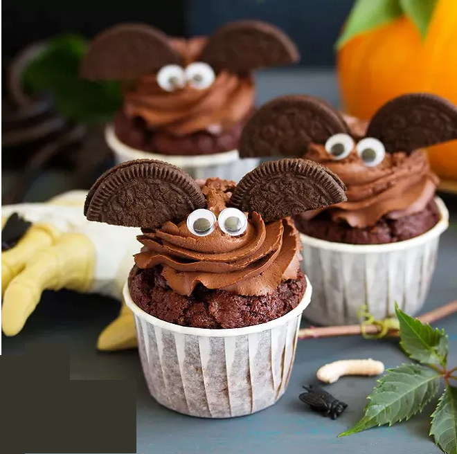
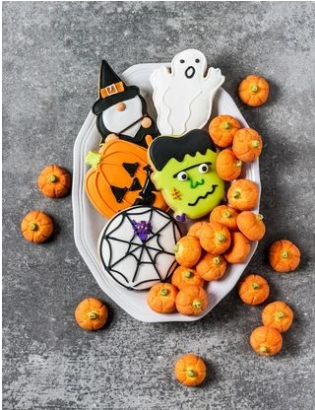

A travers ce site, je vous propose une sélection de 3 à 4 recettes spéciales pour Halloween. Célébrez
Halloween de la meilleure façon possible en découvrant ces délicieuses recettes effrayantes et amusantes.
Surprenez vos invités avec des plats originaux et savoureux qui ajoutent une touche d'horreur à votre soirée. Vous
trouverez certainement des idées gourmandes qui raviront les petits et les grands. Laissez-vous inspirer par ces
recettes uniques et faites de votre soirée d'Halloween un moment inoubliable !
Muffins au chocolat Halloween

Pour 8 personnes :
Ingrédients POUR LES MUFFINS :
- 4 oeufs
- 106.8 g Farine
- 166.8 g de beurre
- 53.3 g Cacao amer en poudre
- 153.3 g sure en poudre
- 1.5 c. à café Levure chimique
Ingrédients POUR LE TOPPING :
- 26.8 cl Crème liquide entière
- 40 g Mascarpone
- 26.8 g Cacao en poudre
- 26.8 g Sucre en poudre
- 10-11 Oreo(s)
PRÉPARATION (40min):
- Préparez les muffins. Dans un saladier, fouettez le beurre mou et le sucre en poudre. Ajoutez les œufs un à un
tout en fouettant afin d'obtenir une préparation homogène. Ajoutez la farine, le cacao en poudre et la lavure
chimique. Mélangez afin d'obtenir une préparation homogène.
- Répartissez la pâte dans des moules à muffins ou des caissettes en papier. Enfournez les muffins pendant 20
min (four préchauffé à 180°C). Sortez les muffins du four et laissez-les refroidir.
- Pendant ce temps, préparez le topping. Dans un saladier bien froid, versez la crème liquide. Montez la crème
en chantilly en ajoutant progressivement le sucre en poudre et le cacao. Ajoutez le mascarpone tout en
continuant de battre.
- Transférez la chantilly dans une poche à douille. Pochez cette crème sur chacun de muffins. Coupez les Oreo en
2 et disposez-les de façon à former les ailes d'une chauve-souris. Décorez avec des yeux en sucre et servez
immédiatement.
- Bon appétit !
Source: Muffins au
chocolat Halloween
Petits biscuits d'Halloween

Pour 8 personnes :
Ingrédients
- 150 g de beurre mou
- 330 g Farine
- 135 g de sucre roux
- 2 oeufs entiers
- 2 blancs
- 1 pincée de sel
- 3 cuillère(s) à soupede lait
- 340 g de sucre glace
- du colorant en poudre ou en gel orange noir, vert
Matériels
- des emporte-pièces halloween
- des stylos de décoration alimentaire
PRÉPARATION (40min):
- Dans un cul de poule, malaxez rapidement avec les mains le beurre mou coupé en morceaux avec la farine, le
sucre le sel. Ajoutez les oeufs et le lait et ramassez la pâte en boule. Filmez-la avec du film alimentaire et
réservez au minimum 30 mn au frais.
- Etalez la pâte sur une feuille de papier cuisson à l'aide d'un rouleau à pâtisserie jusqu'à obtenir 5 mm- 6mn
d'épaisseur. Découpez les biscuits avec les emporte-pièces. Enfournez 12 mn à 160°C. Les biscuits doivent être
juste dorés. Laissez refroidir sur grille.
- Dans un bol, mélangez les blancs d'oeufs avec le sucre glace. Divisez la préparation dans 3 petits bol et
ajoutez les colorants dans chacun et mélangez. Recouvrez les biscuits de glaçage et laissez sécher. Terminez la
décoration avec les stylos.
- Déposez les biscuits d'Halloween sur une assiette et dégustez.
Source: Petits
biscuits d'Halloween